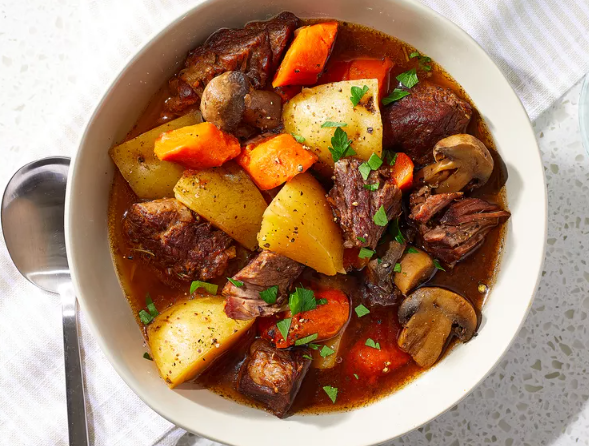

Ensopado de Carne

Um prato fumegante de ensopado de carne, com pedaços macios e suculentos de carne,
acompanhado de legumes frescos cozidos até à perfeição. Uma refeição acolhedora e
satisfatória para aquecer os corações nos dias mais frios.
Ingredientes
- 1 colher de sopa de manteiga
- 1 libra de carne, cortada em cubos de 1 polegada
- 4 Batatas Yukon Gold, em cubos
- 1 xícara e 1/2 de cogumentos cortados ao meio.
- 1 cebola cortada em 6 fatias
- 2 cenouras, cortadas em fatias grossas de 1/2 polegada
- 2 dentes de alho picados
- 3 xícaras de caldo de carne
- 1 colher de sopa de molho inglẽs
- 1 colher de spoa de molho de tomate
- 1 colher de chá de sal
- 1/2 colher de chá de pimenta preta moída
- 1/2 colher de chá de alecrim seco
Etapas
- Reúna todos os ingredientes.
- Ligue uma panela de pressão multifuncional (como Instant Pot) e selecione a função Refogar. Derreta a manteiga na panela. Cozinhe cubos de carne bovina em lotes até dourar por todos os lados, cerca de 5 minutos por lote.
- Devolva todos os cubos de mandril de carne para a panela. Adicione batatas, cogumelos, cebola, cenoura e alho; cubra com caldo de carne. Junte o molho inglês, a pasta de tomate, o sal, a pimenta e o alecrim.
- Feche e tranque a tampa. Selecione a função Carne/Ensopado, conforme instruções do fabricante; ajuste o cronômetro para 35 minutos. Aguarde 10 a 15 minutos para que a pressão aumente.
- Libere a pressão usando o método de liberação natural, de acordo com as instruções do fabricante, de 10 a 40 minutos. Destrave e remova a tampa.
Voltar